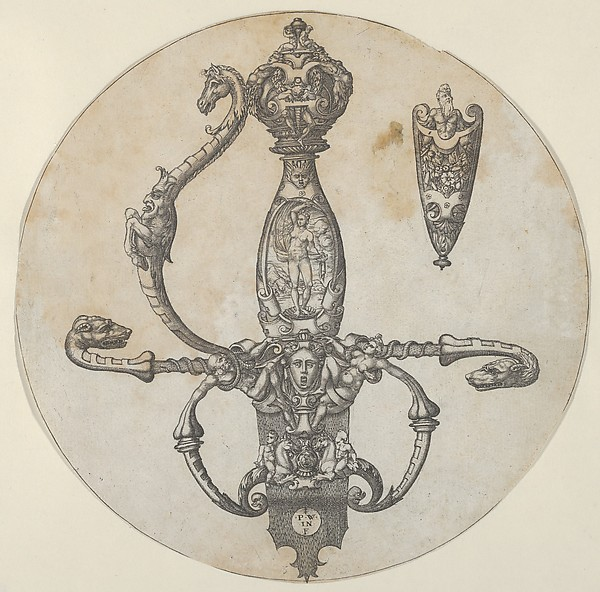
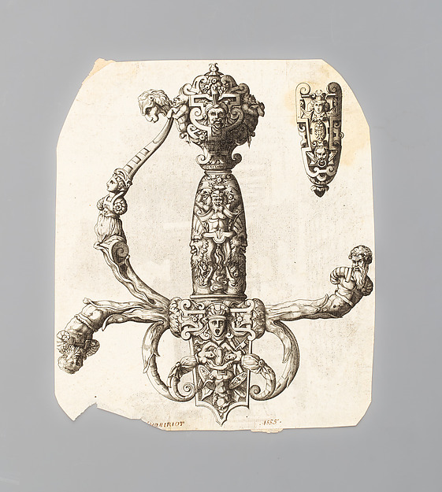

After, not alike
Two impressions of a sword-hilt design · 1550–60 and 1844–46


A relation, not a promise of samenessThe later print keeps a recognizable arrangement; the sheet and details have changed. At its lower edge, red writing appears to read “Woeiriot · 1555.” The record does not identify who wrote it or when. The Met's curators describe ornament prints as sources for later designs; this record does not say whether this sheet was used that way.